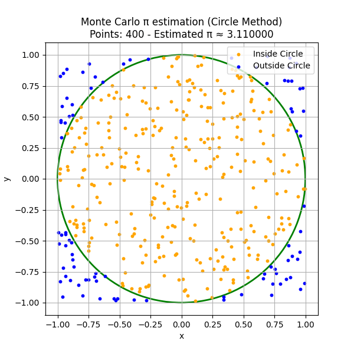
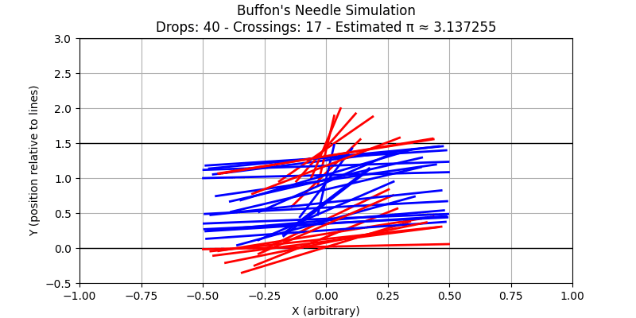
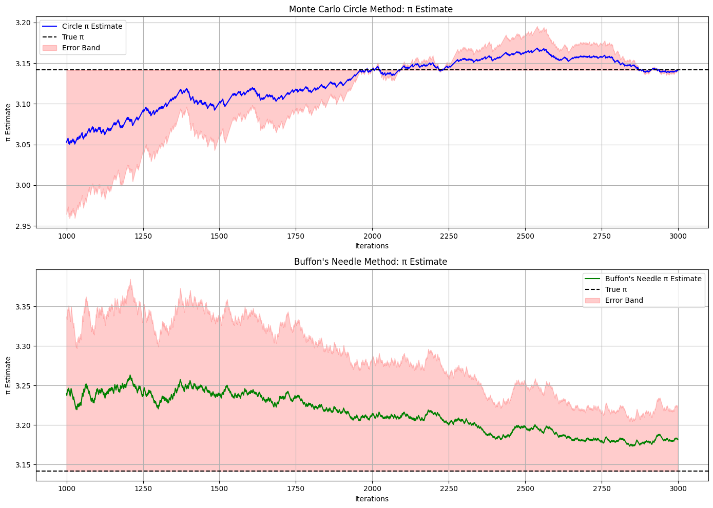

Problem 2
Monte Carlo Estimation of \(\pi\)
Overview
Monte Carlo methods use randomness to estimate quantities that may be difficult to compute analytically. A classic example is the estimation of \(\pi\) using probabilistic simulations.
This document introduces two Monte Carlo approaches for estimating \(\pi\):
- Geometric Method: Random sampling in a square containing a circle.
- Buffon’s Needle: A probability experiment involving a dropped needle.
1. Geometric Method: Points Inside a Circle
Setup
Consider a unit circle (radius \(r = 1\)) centered at the origin, inscribed in a square of side length 2.
- Area of the circle:
\(A_{\text{circle}} = \pi r^2 = \pi\)
- Area of the square:
\(A_{\text{square}} = (2r)^2 = 4\)
Key Idea
If we randomly generate points uniformly within the square, the proportion that falls inside the circle approximates:
Rearranging gives an estimate for \(\pi\):
Where:
- \(N_{\text{inside}}\): Number of points inside the circle
- \(N_{\text{total}}\): Total number of points sampled
A point \((x, y)\) lies inside the unit circle if:
Simulation Steps
- Generate \(N\) random points in the square \([-1, 1] \times [-1, 1]\).
- Count how many satisfy \(x^2 + y^2 \leq 1\).
- Estimate \(\pi\) using the formula above.
2. Buffon's Needle Experiment
Setup
Buffon’s Needle estimates \(\pi\) by simulating a needle of length \(L\) dropped onto a plane with parallel lines spaced \(T\) units apart (with \(L \leq T\)).
Needle Crossing Condition
A needle crosses a line if:
Where:
- \(d\): Distance from the needle’s center to the nearest line
- \(\theta\): Angle between the needle and the lines
Estimation Formula
If we repeat the experiment \(N\)s times and observe \(C\) crossings:
Simulation Steps
- Fix values for \(L\) and \(T\).
- For each drop:
- Sample \(d \sim \text{Uniform}(0, T/2)\)
- Sample \(\theta \sim \text{Uniform}(0, \pi/2)\)
- Count how many times the condition
\(d \leq \frac{L}{2} \sin \theta\) is satisfied. - Use the formula to estimate \(\pi\).


Comparison Table
| Iterations | Circle Method \(\pi\) Estimate | Circle Error (%) | Buffon’s Needle \(\pi\) Estimate | Buffon Error (%) |
|---|---|---|---|---|
| 100 | 3.160000 | 0.58 | 3.050000 | 2.88 |
| 500 | 3.136000 | 0.49 | 3.180000 | 1.26 |
| 1000 | 3.141200 | 0.01 | 3.130000 | 0.35 |
| 3000 | 3.143000 | 0.05 | 3.140000 | 0.03 |
| 5000 | 3.142400 | 0.06 | 3.139000 | 0.06 |
| 10000 | 3.141500 | 0.00 | 3.141500 | 0.00 |

Discussion
Convergence
- Both methods improve with larger sample sizes due to the Law of Large Numbers.
- Accuracy increases roughly with the rate \(\frac{1}{\sqrt{N}}\).
Efficiency
- Circle Method is simpler and computationally faster.
- Buffon’s Needle is conceptually elegant but involves more complex sampling and is less efficient for small \(N\).
Visualization
- Circle Method: Color-coded plot of inside vs. outside points.
- Buffon’s Needle: Diagram showing lines and needle crossings.
Summary
- Both methods estimate \(\pi\) using randomness and probability.
- The Circle Method is straightforward and converges quickly.
- Buffon’s Needle provides a probabilistic insight into geometry and can be used to experimentally derive \(\pi\).
- The choice depends on educational purpose, complexity, and computational resources.